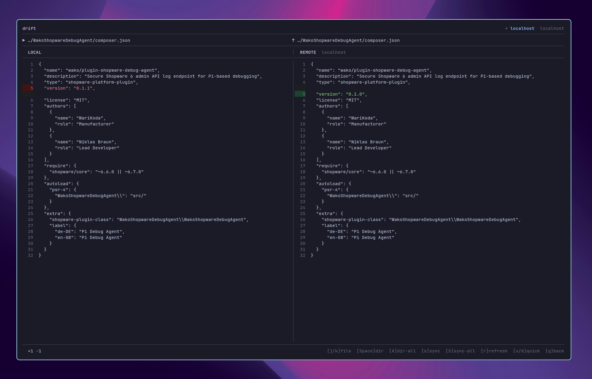

Open source. Currently in alpha.
Local files.
Remote hosts.
Your terminal.
See what's different. Choose what moves.
Browse, diff, and sync files with drift.
For Linux and macOS Written in Go
An example comparison. You choose the direction.
Connect to the hosts you already use.
- SFTP / SSH
- FTP
- FTPS
Check the diff.
Then make the move.
The remote deployment workflow you know from your IDE, right where you already work.
- 1
Pick your files
Browse local and remote directories side by side. Mark files or whole folders with Space, then press s to compare.
- 2
Review the changes
Inspect the diff and choose a direction for each file. Upload, download, delete, or skip. You decide what gets synced.
- 3
Sync what you need
Press s for the current file or S for the whole selection. Stay in the terminal and get back to work.


A real look at drift. Open full size
Built for the files
between deployments.
A host for every project
Switch between projects, manage your hosts, and map local folders to the right remote paths.
Review before you transfer
See the changes alongside your selected files. Adjust suggested sync directions before starting a transfer.
Keep the working tree clean
drift stores its configuration outside your project. No extra dotfiles to commit or ignore.
Meet your remote.
From your terminal.
Install with Go, open your project, and run drift.
Requires Go 1.25+ and Git on your PATH.
Available for Linux and macOS.
Install the latest published version
go install github.com/WariKoda/drift@latestStart in your project
cd your-project
driftMake sure $GOBIN, or $(go env GOPATH)/bin when unset, is on your PATH.